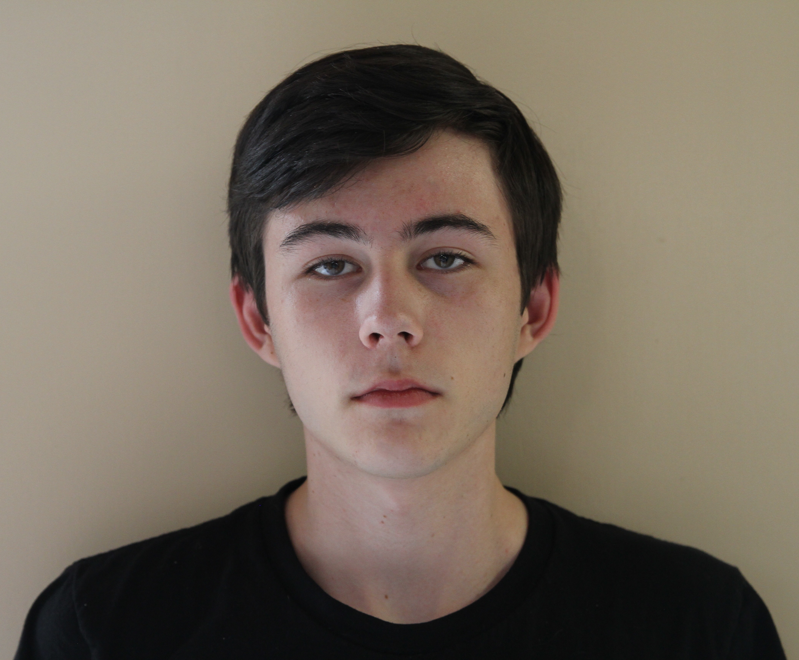

Curator's Office

My name is Ben Hammond and I am a senior at Bishop O'Dowd High School. I chose climate change policy as my topic for this research project because though I personally ascribe to the Black Mountaineering philosophy regarding climate change, I think it is still worthwhile to mitigate the impact global warming will have on future populations. I find the U.S's climate change policy especially interesting primarily because I think it currently represents the amazing ability of people to stick their heads in the sand in spite of danger, but also because I think that as the most powerful nation in the world we have the power and responsibility to lead humanity's reduction of our impact on the environment.
Though the past four years have represented a significant step backward in the U.S's involvement in reducing global warming, I have found the fact that our policy changed so quickly when President Trump was elected to be oddly reassuring, because it means that should someone more concerned with the risks of climate change be elected they could do just as much in the opposite direction. My research has at least given me the hope that our system of government can rapidly re-orient to fight climate change, if not the assurance that it will.